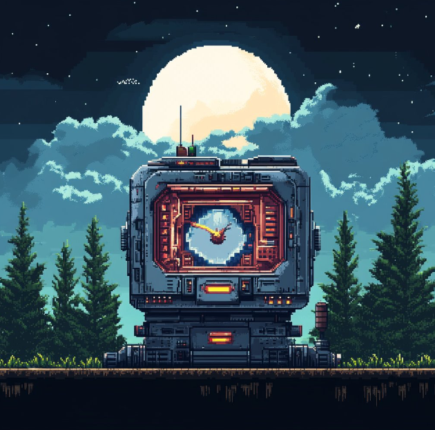
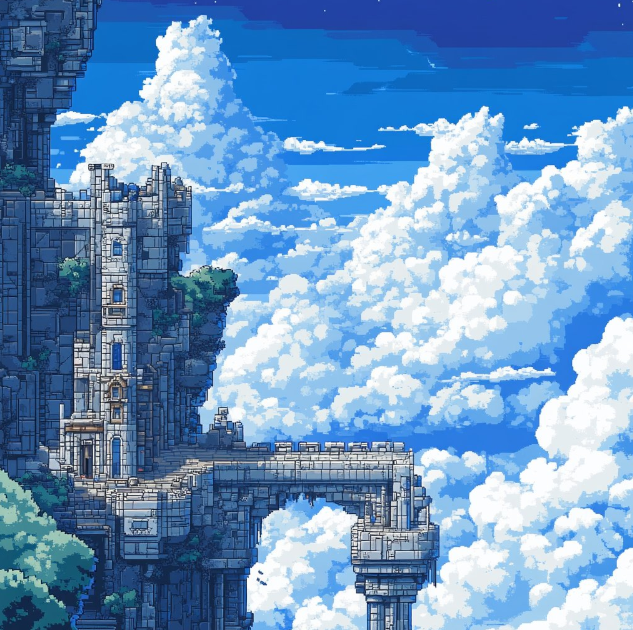
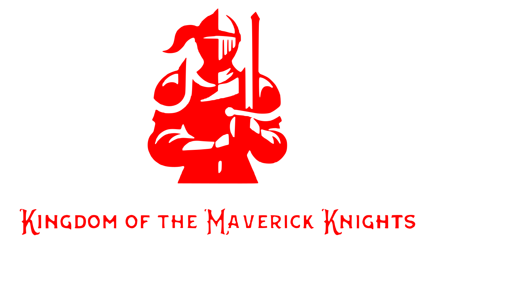

Every choices echoes forever.
Project Chrono is a role playing adventure told across twelve separate timelines, each with its own world, characters, and destiny shaped by the power of time. Players journey from ancient kingdoms to distant futures as they confront apocalypses, alternate selves, forgotten tragedies, cosmic gods, and their own deepest regrets. Every chapter explores a different answer to the question of what a person might change if they could rewrite a single moment in history. Each story stands alone with its own tone and gameplay style, but together they form a greater tale about fate, choice, and the cost of altering time. This is a journey through every path your life could take when one decision changes everything.
Now in Development


Break the old oaths and save a kingdom built on forgotten sins.
The ancient kingdom of Aurivale is collapsing under a spreading corruption born from a dying god that the royal family has tried to sustain through forbidden rituals. Long ago, the Maverick Knights defied these traditions, choosing truth and mercy over blind duty, and the crown erased them from history for their rebellion. Now you awaken as one of the last surviving Mavericks, called by a forgotten oath to uncover the fate of your fallen order and the secrets the monarchy tried to bury. As you explore ruined citadels, cursed forests, and the crumbling heart of the kingdom, you confront corrupted knights, fading deities, and the lingering echoes of those who broke the cycle before you. Your journey decides whether the kingdom will finally be freed from its ancient lies or fall completely into darkness.
Available On: